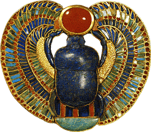
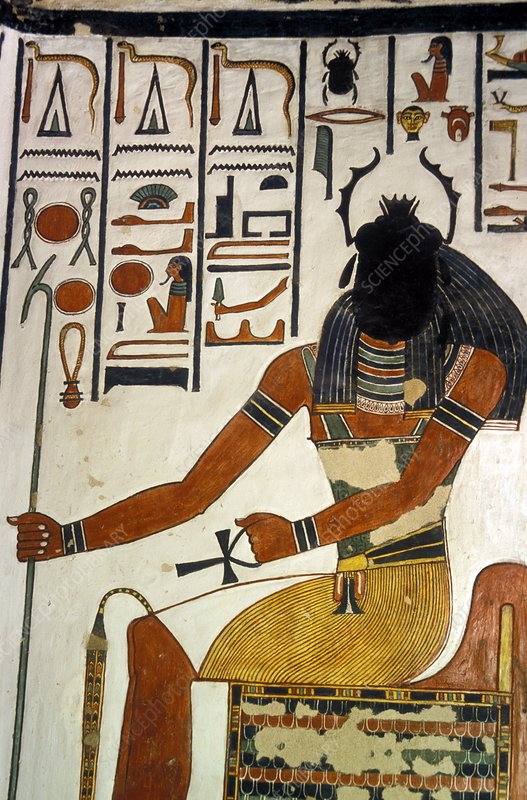

- Moon Knight -
หลายๆคนที่ดู Moon Knight น่าจะสงสัยกันว่าเเมลง Scarab ในเรื่องมีความสำคัญยังไง
ตามความเชื่อของอียิปต์ เดี๋ยววันนี้เราจะมาเล่าให้ฟังเเบบสั้นๆ
- "Scarab" จริงๆเเล้วก็คือด้วงมูล ซึ่งเป็นด้วงที่จะกลิ้งมูลสัตว์เป็นลูกกลมๆเเล้ววางไข่ของ
ตัวเองไว้ในนั้น รอวันที่ตัวอ่อนฟักออกมาเเล้วใช้มูลนั้นเป็นสารอาหารในการเจริญเติบโตต่อไป
- โดยตามธรรมชาติด้วงมูลตระกูล Scarab จะใช้ดวงอาทิตย์เเละดวงจันทร์ในการนำทางขณะ
กลิ้งมูล นี่จึงเป็นหนึ่งเหตุผลที่ทำให้ Scarab ถูกมองว่ามีความเชื่อมโยงกับดวงอาทิตย์เเละ
ดวงจันทร์ เเละกลายเป็นที่มาของ Khepri เทพอียิปต์ที่มีหน้าเป็นด้วงตัวเป็นคน ซึ่งเป็นหนึ่งใน
ร่างจำเเลงของเทพเเห่งดวงอาทิตย์อย่าง Ra อีกด้วย


- ชาวอียิปต์โบราณมักจะนำเครื่องรางรูป Scarab มาใส่ไว้ช่วงบริเวณหัวใจของศพ เป็นการเผื่อ
ในกรณีที่หัวใจเกิดสูญหายหรือชำรุดเมื่อวิญญาณผู้ตายเข้าสู่โลกหลังความตาย เพราะหัวใจนั้น
สำคัญกับผู้ตายมากในการพิพากษาความดีผ่านการนำไปชั่งน้ำหนักกับขนนก
- เราเลยเดาว่า Steven น่าจะได้รับพลังมาจาก Scarab เนี่ยเเหละเพราะตัว Moon Knight ก็มีธีมของดวงจันทร์อยู่เเล้วด้วย.
Source: https://youtu.be/JpGgLkPGFCg
https://www.youtube.com/watch?v=IB-MUvIObJM
หนังสือ "30-Second Ancient Egypt" By Peter Der Manuelian
#MoonKnight
ผู้เขียน: ประยศ ปลอดภัย (Red)
ภาพประกอบ: ประยศ ปลอดภัย (Red)